전파전자통신기사 (2020-09-26 기출문제)
1과목: 디지털전자회로
1. 직류 출력전압이 무부하일 때 250[V]이고 부하일 때 220[V]이다. 이때 정류회로의 전압변동률은?
- 12.6[%]
- 13.6[%]
- 25.2[%]
- 27.2[%]
(정답률: 71%)

2. 다음과 같은 정류회로에 사용된 다이오드의 최대 역전압(PIV)는 10[V]이다. 100[V], 60[Hz]의 피크 정현파가 입력될 때, 정상적인 회로 동작을 보장하기 위한 최대 권선비는? (여기서 n은 1차측 권선비이고 m은 2차측 권선비이다.)
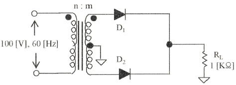
- 10:1
- 1:10
- 1:20
- 20:1
(정답률: 63%)
3. 제너 다이오드의 항복전압이 10[V], 내부저항이 8.5[Ω]이다. 제너 전류가 20[mA]일 때 부하전압은 얼마인가?
- 10.11[V]
- 10.13[V]
- 10.15[V]
- 10.17[V]
(정답률: 67%)
4. 다음 중 증폭기에 대한 설명으로 옳은 것은?
- 교류성분을 직류성분으로 변환하기 위한 전기회로다.
- 다이오드를 사용하여 교류 전압원의 (+) 또는 (-)의 반사이클을 정류하고, 부하에 직류 전압을 흘리도록 한다.
- 교류(AC)를 직류(DC)로 바꾸는 여러 과정 가운데 맥류를 완전한 직류로 바꾸어 준다.
- 입력의 신호변화 형상이 출력단에 확대되어 복사된다.
(정답률: 69%)
5. 다음 중 부궤한 증폭회로의 특징이 아닌 것은?
- 이득 증가
- 비직선 일그러짐 감소
- 잡음 감소
- 안정도 향상
(정답률: 62%)
6. 다음 증폭기에 대한 설명으로 틀린 것은?
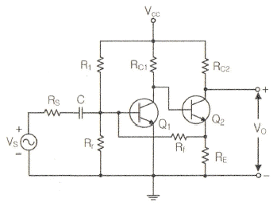
- 병렬전류부궤한 회로이다.
- 입력임피더스는 감소하며 출력임피던스는 증가한다.
- 궤환율(β)는
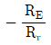
이다. - RE, Rr, RS, RC1이 안정화 되면 TR의 파라미터 변화와 관계없이 안정한 출력이 나온다.
(정답률: 78%)
7. 다음 중 이상적인 연산증폭기의 특성이 아닌 것은?
- 전압증폭도가 무한대
- 입력 임피던스가 무한대
- 출력 임피던스가 무한대
- 주파수 대역폭이 무한대
(정답률: 48%)
8. 증폭기와 정궤환 회로를 이용한 발진회로에서 증폭기의 이득을 A, 궤환율을 β라고 할 때, βA>1이면 출력되는 파형은 어떤 현상이 발생하는가?
- 출력되는 파형의 진동이 서서히 사라진다.
- 출력되는 파형은 진폭에 클리핑이 일어난다.
- 지속적으로 안정적인 파형이 발생한다.
- 출력되는 파형은 서서히 진폭이 작아진다.
(정답률: 71%)
9. 다음 중 온도 특성이 좋고, 전원이나 부하의 변동에 대하여 비교적 안정도가 좋기 때문에 안정한 주파수의 발생원으로 많이 쓰이는 발진회로는?
- 빈 브리지형 발진회로
- 수정 발진회로
- RC 발진회로
- 이상형 발진회로
(정답률: 83%)
10. 다음 중 RC발진회로에 대한 설명으로 옳은 것은?
- 콘덴서와 저항만으로 궤환회로를 구성한다.
- 압전기 효과를 이용한 발진기이다.
- 종류로는 콜피츠 발진회로와 하틀리 발진회로가 있다.
- 부궤환 시키면 발진 주파수가 증가한다.
(정답률: 69%)
11. 다음 그림과 같은 AM변조 회로는 어떤 변조인가?
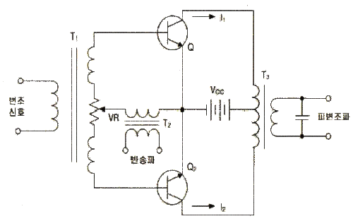
- 베이스 변조회로
- 애미터 변조회로
- 트랜지스터 평형 변조회로
- 컬렉터 변조회로
(정답률: 63%)
12. 다음 중 주파수 변조에서 S/N비를 높이기 위한 방법이 아닌 것은?
- 주파수 대역폭을 크게 한다.
- 변조지수를 크게 한다.
- 프리엠퍼시스 회로를 사용한다.
- 주파수 변별회로를 사용한다.
(정답률: 48%)
13. 진폭변조에서 신호파의 진폭이 70, 반송파의 진폭이 100일 때의 변조도는 몇 [%]인가?
- 20[%]
- 30[%]
- 70[%]
- 100[%]
(정답률: 75%)
14. 다음 중 아날로그 신호를 디지털 신호로 변환할 때 양자화 잡음의 경감 대책이 아닌 것은?
- 압신기를 사용한다.
- 양자화 스텝수를 감소시킨다.
- 양자화 비트수를 증가시킨다.
- 비선형화 한다.
(정답률: 82%)
15. 펄스파에서 낮은 주파수 성분이나 직류분이 잘 통하지 않기 때문에 생기는 것으로 펄스 하강 부분이 낮아진 크기를 무엇이라 하는가?
- 새그(Sag)
- 링깅(Ringing)
- 언더슈트(Undershoot)
- 오버슈트(Overshoot)
(정답률: 57%)
16. 다음 회로의 입력에 정현파를 가했을 때 출력 파형은?
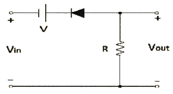
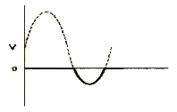
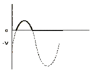
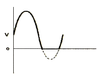
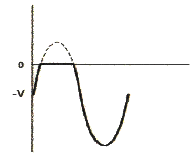
(정답률: 57%)
17. 다음 회로에서 A, B, C를 입력, X를 출력이라고 하면 회로는 어떤 논리 게이트인가? (단, 정논리 회로이다.)
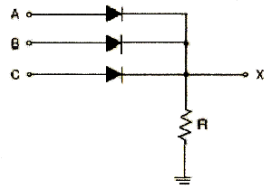
- NAND 게이트
- OR 게이트
- AND 게이트
- NOR 게이트
(정답률: 71%)
18. 입력 주파수 512[kHz]를 T형 플립플롭 7개 종속 접속한 회로에 인가 했을 때 출력 주파수는 얼마인가?
- 256[kHz]
- 8[kHz]
- 4[kHz]
- 2[kHz]
(정답률: 79%)
19. 비동기식 5진 카운터(Counter) 회로는 최소 몇 개의 플립플롭(Flip-Flop)이 필요한가?
- 4
- 3
- 2
- 1
(정답률: 77%)
20. 조합 논리 회로 중 0과 1의 조합으로 부호화를 행하는 회로로 2n개의 입력선과 n개의 출력 선으로 구성된 것은?
- 디코더(Decoder)
- DEMUX
- MUX
- 언코더(Encoder)
(정답률: 79%)
2과목: 무선통신기기
21. 고전력 변조 방식의 dab송신기는 변조를 다음 중 어느 단에서 수행하는가?
- 완충 증폭부
- 주파수 체배부
- 여진 전력 증폭부
- 종단 전력 증폭부
(정답률: 65%)
22. 수신주파수가 700[kHz]이고, 중간주파수가 455[kHz]인 수퍼헤테로다인수신기가 10[kHz]의 대역폭을 갖는 신호를 수신할 때 영상신호의 주파수는 몇 [kHz]인가?
- 345[kHz]
- 1155[kHz]
- 1610[kHz]
- 1720[kHz]
(정답률: 64%)
23. DSB 변조에서 정현파로 변조된 피변조파의 변조도(m)가 0.6이고, 반송파의 평균전력(Pc)이 1,000[W]일 때 피변조파의 전력은?
- 1,360[W]
- 1,180[W]
- 1,600[W]
- 1,300[W]
(정답률: 45%)
24. 다음 중 직교주파수분할(OFDM)에 대한 설명으로 틀린 것은?
- 주파수 오프셋 등의 다양한 오류에 둔감 하다.
- 멀티패스 및 이동수신환경에서 우수한 성능을 발휘한다.
- 각의 부반송파들은 스펙트럼 상에서 직교성을 유지하는 최소 주파수 간격으로 중첩을 허용하여 전송할 수 있으므로 스펙트럼 효율을 극대화할 수 있다.
- 다중반송파 전송기법의 일종으로 직렬로 입력되는 고속데이터열을 다수의 부반송파에 실어 전송하는 변조기법이다.
(정답률: 48%)
25. 다음 중 펄스부호변조(PCM) 방식에 대한 설명으로 틀린 것은?
- Fading에 의한 영향으로 사용이 불가능할 경우가 있다.
- 다단 전송이나 기록 재생 시 생기는 잡음의 누적이 적다.
- 점유 주파수대폭이 좁다.
- 전송로에 대한 비직선 왜곡의 영향이 적다.
(정답률: 59%)
26. 다음 중 Klystron증폭기에 관한 설명으로 틀린 것은?
- 높은 이득, 양호한 효율을 갖는다.
- 대역폭이 넓다.
- 높은 동작전압을 필요로 한다.
- 고출력 선형 가속기로도 사용한다.
(정답률: 56%)
27. 레이다는 전파의 어떤 성질을 이용하여 목표물의 위치를 탐지하는가?
- 회절성, 정속성
- 직진성, 정속성
- 직진성, 변속성
- 굴절성, 변속성
(정답률: 82%)
28. 다음 중 마이크로웨이브 통신의 장점으로 옳지 않은 것은?
- 안정된 전파특성을 가진다.
- 협대역통신이 가능하다.
- 예민한 지향성과 고이득 안테나를 소형으로 얻을 수 있다.
- 전리층을 통과하여 전파하므로 우주통신이 가능하다.
(정답률: 57%)
29. 통신위성시스템은 크게 페이로드 시스템과 버스 시스템으로 구성된다. 다음 중 버스 시스템에 해당되지 않는 것은?
- 자세궤도제어 시스템
- 추진시스템
- 전원공급 시스템
- 안테나 시스템
(정답률: 67%)
30. 다음 중 Inmsat-C의 전파형식은?
- J3E
- G1B
- G1E
- A1A
(정답률: 69%)
31. 다음 중 Imarsat Fleet-77을 이용한 긴급통신을 행할 경우 레벨로 적합한 것은?
- Level 1
- Level 2
- Level 3
- Level 4
(정답률: 65%)
32. 직렬로 접속된 축전지를 부동 상태로 사용하면 개개의 축전지에 비중이나 전압의 분리가 발생하는데, 이에 대한 문제를 해결하기 위한 충전 방법으로 적합한 것은?
- 부동충전
- 초충전
- 과충전
- 균등충전
(정답률: 53%)
33. 다음 중 인버터 방식에서 전류원과 전압원을 비교할 때 전압원 인버터의 장점이 아닌 것은?
- 유도 전동기 구동시 속도 제어 범위가 더 넓다.
- 제어회로가 비교적 간단하다.
- 용량성, 유도성 부하 모두에 사용 가능하다.
- 주로 소, 중용량에 사용한다.
(정답률: 74%)
34. 송신기의 입력전압이 2,000[V], 입력전류가 100[mA]일 때 양극효율이 80[%]인 C급 증폭기가 있다. 송신기 출력은 얼마인가? (단, 양극회로의 Q가 무부하시 120 이며, 부하시 15 이다.)
- 120[W]
- 130[W]
- 140[W]
- 150[W]
(정답률: 57%)
35. 1[kW]의 송신기 전력이 전송되다가 송신출력이 3[dB] 떨어졌다. 이때의 전력은 약 몇 [kW]인가?
- 1
- 0.8
- 0.5
- 0.3
(정답률: 71%)
36. AM송신기의 S/N비 측정 시 설명으로 거리가 먼 것은?
- 직선검파기와 송신기는 소결합시켜 동조시킨다.
- S/N비에 대한 측정의 단위는 통상 [%]로 표시한다.
- 변조도는 80[%] 정도로 한다.
- 저주파발진기는 보통 1000[Hz]로 한다.
(정답률: 59%)
37. 송신기의 출력 회로를 조정하여 컬렉터 직류전압이 2[kV] 컬렉터 직류전류가 200[mA]일 때 컬렉터 출력은? (단, 컬렉터 효율은 60[%]이다.)
- 400[W]
- 240[W]
- 160[W]
- 120[W]
(정답률: 65%)
38. 다음 중 Push-Pull 전력증폭기에서 출력파형의 찌그러짐이 작아지는 이유는 무엇인가?
- 직류성분이 없어지기 때문에
- 기수차 및 우수차 고조파가 상쇄되기 때문에
- 우수차 고조파가 상쇄되기 때문에
- 기수차 고조파가 상쇄되기 때문에
(정답률: 77%)
39. 여축전지의 충전을 완료했을 때 나타나는 현상으로 틀린 것은?
- 전해액의 온도는 낮아진다.
- 전해액의 비중이 높아진다.
- 가스(물거품)가 많이 발생한다.
- 단자전압이 상승하여 2.6~2.8[V] 정도가 된다.
(정답률: 69%)
40. 다음 중 수신기 4대 특성요소에 해당하지 않는 것은?
- 안정도
- 충실도
- 감도
- 변조율
(정답률: 67%)
3과목: 안테나공학
41. 다음 중 전자파를 이루는 전계와 자계의 관계를 설명한 것으로 틀린 것은?
- 전자파는 전계와 자계의 2가지 성분으로 이루어진다.
- 전계와 자계는 시간적으로는 역위상이다.
- 전계와 자계는 공간적으로는 서로 직각이다.
- 전자파는 전계와 자계가 항상 같이 존재한다.
(정답률: 67%)
42. 다음 중 TV 화면이 여러개로 겹쳐 보이는 고스트(Ghost) 현상이나 단파라디오를 들을 때 소리가 커졌다 작아졌다 하는 페이딩 현상을 야기하는 원인으로 가장 적합한 전파의 성질은?
- 굴절성
- 반사성
- 산란성
- 회절성
(정답률: 65%)
43. 전자파의 전파속도는 매질의 어떤 특성에 따라서 변동하는가?
- 유전율과 도전율
- 유전율과 투자율
- 도전율과 투자율
- 도전율과 저항률
(정답률: 67%)
44. 매질의 비율전율이 9이고, 비투자율이 1일 때 전파속도는 약 얼마인가?
- 1/9×108[m/sec]
- 1/3×108[m/sec]
- 1×108[m/sec]
- 3×108[m/sec]
(정답률: 67%)
45. 특성 임피던스가 75[Ω]인 선로에 120[Ω]인 부하 임피던스를 접속할 때의 정재파비는 약 얼마인가?
- 0.1
- 0.6
- 1.6
- 2.6
(정답률: 62%)
46. 동조 급전선에 대한 설명으로 틀린 것은?
- 급전선상에 정재파를 실어서 급전한다.
- 정함 장치가 불필요하다.
- 급전선 길이와 파장이 일정한 관계가 있다.
- 급전선상에서 전송손실이 작다.
(정답률: 18%)
47. 다음 중 구형도파관에 차단파장보다 짧은 파장의 전파를 인가한 설명으로 옳은 것은?
- 전파전송이 불가능하다.
- 위상속도는 항상 빛의 속도보다 늦다.
- 군속도는 항상 빛의 속도보다 빠르다.
- 특성임피던스는 자계파의 경우 377[Ω]보다 크다.
(정답률: 53%)
48. 도파관내에 관축과 직각인 평면내에 구멍이 뚫린 얇은 도체판(Slot)을 삽입하여 부하와 정합을 시키는 방법은?
- 무반사 종단회로
- 도체봉(Post)
- 스터브(Stud)
- 도파관 창(Window)
(정답률: 74%)
49. 반파장 다이폴 안테나의 실효 길이는 λ/4 접지 안테나의 실효고의 몇 배인가?
- 1배
- 2배
- 3배
- 4배
(정답률: 62%)
50. 안테나의 상대이득에서 기준 안테나는 무엇인가?
- 등방성 안테나
- 무손실 반파장 안테나
- λ/4 수직접지 안테나
- λ/4 보다 극히 짧은 수직접지 안테나
(정답률: 50%)
51. 어떤 접지 안테나의 복사저항이 30[Ω]이고 도체저항이 5[Ω]이며 손실저항이 25[Ω]이라고 할 때 안테나의 복사효율은 몇 [%]인가?
- 25[%]
- 50[%]
- 75[%]
- 100[%]
(정답률: 24%)
52. 다음 중 비접지형 단일소자로 구성되지 않은 안테나는?
- 헬리컬 안테나
- 루프 안테나
- 야기 안테나
- 슬리브 안테나
(정답률: 53%)
53. 다음 중 웨이브(Wave) 안테나에 관한 설명으로 가장 틀린 것은?
- 지향특성은 단일 지향 특성이다.
- 도선의 길이가 사용파장에 비해 갈수록 빔폭이 넓어진다.
- 광대역 특성을 갖는다.
- 한 개의 안테나를 여러 주파수에 사용 할 수 있다.
(정답률: 24%)
54. 다음 중 극초단파용 안테나가 아닌 것은?
- 슬롯 안테나
- 렌즈 안테나
- 유전체 안테나
- 애드콕 안테나
(정답률: 48%)
55. 지표파의 전파양식에서 전계강도가 큰 순서대로 나열한 것은?
- 해상 - 평야 - 구릉 - 시가지
- 사막 - 산악 - 평야 - 구릉
- 산악 - 구릉 - 해안 - 사막
- 시가지 - 평야 - 구릉 - 산악
(정답률: 75%)
56. 대기의 굴절률 분포의 변화에 의하여 전파통로의 굴절 효과가 변화하고 그 때문에 직접파와 대지반사파의 위상차가 시간적으로 변화하여 발생하는 페이딩의 종류는?
- 산란형
- K형
- 덕트형
- 신틸레이션형
(정답률: 65%)
57. 다음 중 주파수 대역에 따른 전리층 전파의 특징으로 틀린 것은?
- 중파의 경우 야간에 E층 반사를 할 수 있다.
- 장파의 경우 주야 구분 없이 D층의 영향을 받는다.
- 단파의 경우 주간에 높은 주파수, 야간에 낮은 주파수를 사용한다.
- 장거리 통신에서 장파는 페이딩이 적으나 단파는 페이딩이 일어나기 쉽다.
(정답률: 48%)
58. 델린저 현상에 대한 설명으로 틀린 것은?
- 태양면의 폭발에 기인한다.
- 돌발적으로 발생한다.
- 주간에 저위도 지역에서 발생한다.
- 높은 주파수의 전파에 영향을 많이 미친다.
(정답률: 69%)
59. 다음 중 자연잡음이 아닌 것은?
- 대기잡음
- 침적잡음
- 온도잡음
- 코로나 방전
(정답률: 78%)
60. 원거리통신에서 장파에 비해 단파의 특징으로 잘못된 것은?
- 페이딩이 발생하기 쉽다.
- 공전의 영향을 받기 쉽다.
- 안테나 소형이다.
- F층 반사파를 주로 이용한다.
(정답률: 32%)
4과목: 통신영어 및 교통지리
61. Choose the most suitable words for the blank of the following sentence.
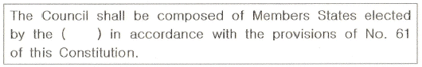
- Study Group
- Plenipotentiary Conference
- Radio Assembly
- General Secretariat
(정답률: 62%)
62. Choose the best definition of certain terms which would be appropriate in the following sentence.
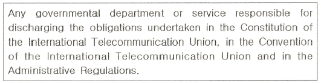
- Government Telecommunications
- Administration
- Delegation
- Harmful Interference
(정답률: 73%)
63. Choose the best definition of certain terms which would be appropriate in the following sentence.
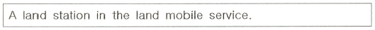
- Automobile Station
- Satellite Station
- Fixed Station
- Base Station
(정답률: 70%)
64. Select appropriate one in the blank in following Regulation;
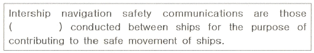
- on scene communications
- search and rescue operations
- 2,182[kHz] radio telephony
- VHF radio telephone communications
(정답률: 53%)
65. Choose the suitable one in the blank and complete the following sentence.
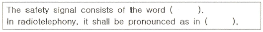
- MAYDAY, English
- PAN, English
- PAN, French
- SECURITE, French
(정답률: 56%)
66. Choose the suitable one in the blank and complete the following sentence.
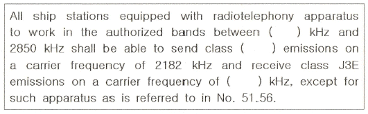
- 2100, H3E, 2182
- 1606.5, F3E, 2182
- 1606.5, J3E, 2182
- 525.6, J3E, 2187.5
(정답률: 57%)
67. Choose the wrong Korean translation for the underlined parts.
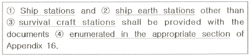
- 선박국
- 선박지구국
- 구명정국
- 해당 절에서 송신하고 있는
(정답률: 63%)
68. Which is the Organization to continue its studies of the GMDSS?
- IMO
- MMO
- ITU-R
- ITU-T
(정답률: 57%)
69. 다음 약어를 잘못 표현한 것은?
- CQ - General call to all stations
- OK - It is correct
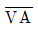
- End of message- CS - Call sign
(정답률: 59%)
70. 다음 중에서 전송할 문자의 발음이 정확하지 않은 것은?
- T : TANG GO
- G : GOLF
- A : AL FAH
- Z : ZOO NEE
(정답률: 67%)
71. 다음 중 아래 문장이 뜻하는 것은?
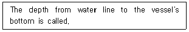
- freeboard
- draft
- distance
- breadth
(정답률: 48%)
72. 다음 단어 중 “Nature of distress"에 속하지 않는 것은?
- Anchoring
- Abandon
- Collision
- Fire
(정답률: 60%)
73. Which is improper one of the following relations?
- 통과지점(보고지점) : Calling-in-point
- 전속후진((全速後進) : Full stern
- 건현(乾舷) : Freeboard
- 전장(全長) : Length Over all(LOA)
(정답률: 71%)
74. 다음 중 Straits 소재위치를 말한 것으로 틀린 것은?
- Sunda Strs.는 Sumatra섬과 Malaysia 사이에 있다.
- Palk Strs.는 India와 Sri - Lanka 사이에 있다.
- Hormuz Strs.는 Iran과 Oman 사이 Gulf of Persian 입구에 있다.
- Mozambique Strs.는 Africa와 Madagascar섬 사이에 있다.
(정답률: 50%)
75. 다음 중 틀린 것은?
- Bay of Bengal은 India 동쪽의 바다 이름이다.
- Bay of Biscay는 France 서쪽, Spain 북쪽의 바다 이름이다.
- Gulf of mexico은 Mexico와 California 반도 사이의 바다 이름이다.
- Arabian sea는 India 서족의 바다 이름이다.
(정답률: 48%)
76. 다음 중 지중해와 홍해를 연결하는 운하는?
- 수에즈운하
- 파나마운하
- 북해운하
- 키일운하
(정답률: 59%)
77. 말레이시아반도와 인도네시아 사이의 해협의 명칭으로 맞는 것은?
- 싱가폴
- 말라카
- 북해운하
- 말레이지아
(정답률: 73%)
78. 다음 중 편서풍의 설명으로 맞지 않는 것은?
- 온대 고압대에서 한 대 저압부의 남북 위도 30도와 60도 사이에서 분다.
- 지구 자전에 의한 전향력에 의하여 발생한다.
- 북반구에서는 남서풍, 남반구에서는 북서풍이 분다.
- 남반구보다 북반구의 편서풍이 강하다.
(정답률: 75%)
79. 다음 중 고기압의 특징이 아닌 것은?
- 공기가 나가면 그곳을 채우기 위해 하강 기류가 생긴다.
- 날씨가 좋아진다.
- 고기압의 범위는 저기압에 비해 대개 광범위하다.
- 상승기류가 생긴다.
(정답률: 53%)
80. 우리나라에 내습하는 TYPHOON은 주로 어느 지역에서 발생하는가?
- Hawaiian Is.
- Mariana Is.
- Fuji Is.
- Solomon Is.
(정답률: 59%)
5과목: 전파관계법규
81. 다음 중 전파법의 목적이 아닌 것은?
- 전파의 효율적인 이용 및 관리
- 전파 관련분야의 진흥과 공공복리의 증진에 이바지
- 전파이용과 전파에 관한 기술의 개발 촉진
- 새로운 전파자원의 개발
(정답률: 65%)
82. 다음 중 무선국의 분류에 대한 설명으로 틀린 것은?
- 항공국이란 항공기에 설치된 무선국이다.
- 선반국은 선박에 개설하여 해상이동업무를 행하는 무선국이다.
- 고정국은 고정업무를 행하는 무선국이다.
- 기지국은 육상이동국과 통신을 할 수 있다.
(정답률: 59%)
83. 과학기술정보통신부장관이 전파자원 확보를 위하여 수립·시행하여야 하는 시책이 아닌 것은?
- 새로운 주파수의 이용기술 개발
- 이용중인 주파수의 이용 효율 향상
- 주파수의 이용 효율 개선을 위한 조사
- 국가간 전파 혼신을 해소하기 위한 협의·조정
(정답률: 56%)
84. 과학기술정보통신부가 주파수 회수 또는 재배치할 때에 손실보장을 해야 하는 경우는?
- 국제전기통신연합이 세계 공통으로 국제분배를 변경하여 주파수 분배를 변경한 경우
- 기간통신사업의 허가가 취소된 경우
- 종합유선방송사업의 허가가 취소된 경우
- 주파수의 용도가 제1순위 업무인 주파수를 사용하는 경우
(정답률: 59%)
85. 주파수할당을 받은 자가 주파수이용기간이 만료되어 주파수재할당을 받으려면 주파수이용기간 만료 및 몇 개월 전에 재할당 신청을 하여야 하나?
- 1개월 전
- 2개월 전
- 3개월 전
- 6개월 전
(정답률: 65%)
86. 선상통신국의 무선국 개설허가의 유효기간은 몇 년인가?
- 1년
- 2년
- 3년
- 5년
(정답률: 53%)
87. 다음 중 선박국이 그 선박이 소재하는 통신권의 해안국에 통지해야 할 경우로 맞지 않는 것은?
- 선박이 당해 해안국의 통신권에 들어 왔을 때
- 선박이 당해 해안국의 통신권을 떠나고자 할 때
- 선박이 입항으로 폐국하고자 할 때
- 선박이 입거 수리차 토크에 들어 갈 때
(정답률: 69%)
88. 송신설비의 안테나, 급전선 등 고압전기를 통과하는 장치는 그 높이가 사람이 보행하거나 생활하는 평면으로부터 몇[m]이상이어야 하는가?
- 2.5[m]
- 3[m]
- 3.5[m]
- 4[m]
(정답률: 74%)
89. 다음 중 수신 설비의 충족 조건이 아닌 것은?
- 수신 주파수는 운용 범위 이내일 것
- 선택도가 클 것
- 내부 잡음이 클 것
- 낮은 신호에서도 감도가 양호할 것
(정답률: 62%)
90. 다음 안테나공급전력 표시 방법 중 평균전력의 표시는?
- PX
- PY
- PR
- PZ
(정답률: 56%)
91. 선박이나 항공기의 조난이 없음에도 불구하고 무선설비로 조난통신을 한 자의 벌칙은?
- 2년 이하의 징역에 처한다.
- 3년 이하의 징역에 처한다.
- 4년 이하의 징역에 처한다.
- 5년 이하의 징역에 처한다.
(정답률: 65%)
92. 다음 중 ITU의 업무규칙 중 하나인 전파규칙(RR)을 부분적으로 개정 할 수 있는 조직은?
- 세계전파통신회의
- 전파규칙위원회
- 전파관리위원회
- 전파통신국
(정답률: 48%)
93. 다음 중 국제전기통신연합의 법률문서 규정 간에 불일치가 있는 경우의 설명으로 틀린 것은?
- 협약과 업무규칙의 규정 간에는 협약이 우선한다.
- 헌장과 협약 간에 규정의 불일치가 있는 경우에는 헌장이 우선한다.
- 헌장과 협약 또는 업무규칙의 규정 간에 불일치가 있는 경우에는 헌장이 우선한다.
- 규정의 중요도에 따라 헌장, 협약 및 업무규칙을 우선 적용한다.
(정답률: 59%)
94. 세계전파통신회의 영문 약자는?
- RA
- RRC
- WRC
- RRB
(정답률: 78%)
95. 다음 중 국제전파규칙의 원칙이 아닌 것은?
- 회원국들은 필요한 서비스를 충족시킬 수 있는 최대한의 주파수를 이용하기 위해 가능한 최신 기술을 적용하도록 노력
- 회원국은 이 규칙에 따라 운용하는 다른 회원국의 무선통신업무에 대하여 유해 혼신을 야기하지 않도록 무선국을 설침·운용
- 한정된 천연자원인 무선 주파수 스펙트럼과 정지위성궤도에 대한 공평한 접근과 그 합리적 사용을 촉진
- 조난 및 안전목적으로 규정된 주파수의 이용가능성을 보장하고 이를 유해혼신으로부터 보호
(정답률: 35%)
96. 해상 인명안전협약(SOLAS)에서 정의하는 해역 중 계속적인 DSC 경보를 이용할 수 있는 최소한 하나의 VHF 해안국의 무선전화 통신 범위 내의 해역은 무엇인가?
- A1 해역
- A2 해역
- A3 해역
- A4 해역
(정답률: 69%)
97. 통신 보안이란 무엇인가?
- 통신내용을 감청 분석하는 것이다.
- 통신내용의 누설을 방지하는 것이다.
- 통신소 위치를 탐지하는 것이다.
- 통신장비를 안전하게 보존하는 것이다.
(정답률: 77%)
98. 다음 중 보안책임자가 수행하여야 하는 사항이 아닌 것은?
- 불필요한 내용의 무선통신 사용 억제
- 통신보안에 관한 관계규정 숙지 및 이행
- 무선국 운용에 따른 통신보안업무 활동계획 수립
- 유선통신을 이용하여 발신하고자 하는 통신문에 대한 보안성 검토
(정답률: 60%)
99. 다음 중 전기통신역무를 제공받기 위하여 개설한 무선국의 시설자의 통신보안 위반사항이 아닌 통신은?
- 북한통신소와의 교신 행위
- 국내 침투 간첩 신고를 위한 교신 행위
- 반국가적 행위의 수행을 목적으로 하는 내용
- 범위행위를 목적으로 하거나 범죄행위를 교사하는 내용
(정답률: 62%)
100. 다음 괄호 안에 들어갈 내용으로 가장 적합한 것은?
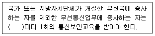
- 1년
- 2년
- 3년
- 5년
(정답률: 57%)